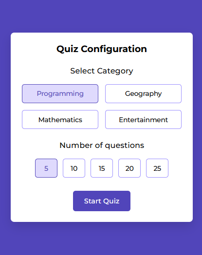

JavaScript
The Quiz App allows users to select the category and the number of questions they want to test their knowledge. It includes a user-friendly, interactive interface with an aesthetic design and a built-in timer for each question. The app features dynamic elements, such as selecting categories, tracking the number of questions, and a timer that counts down until time runs out. After completing the quiz, the results show how many questions were answered correctly, providing valuable feedback.
Using JavaScript and DOM manipulation, the app renders random questions based on the selected category, highlights the correct answer, and gives feedback based on the user's selections. Key functionalities include handling user clicks, showing real-time results, and providing the option to restart the quiz. The app’s interface is optimized to ensure an engaging and seamless experience for the user, with smooth transitions between each question and the final result.
The app is designed to be reusable by simply updating the question arrays and keywords, as well as renaming the categories to suit different topics.